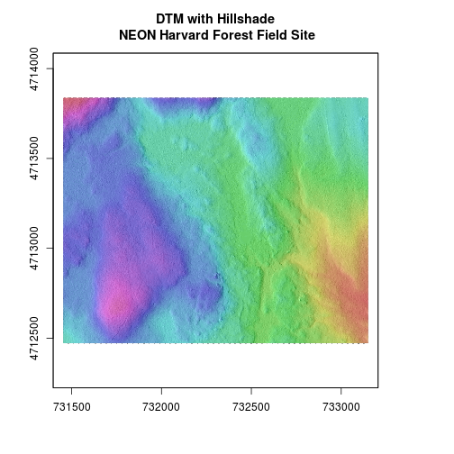
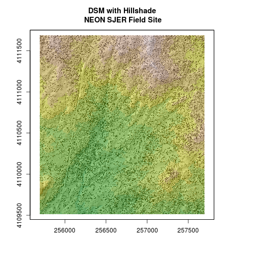

Reproject Raster Data in R
Authors
Leah A. Wasser, Megan A. Jones, Zack Brym, Kristina Riemer, Jason Williams, Jeff Hollister, Mike Smorul, Joseph Stachelek
Overview
Teaching: 10 min
Exercises: 0 minQuestions
What to do when rasters don’t line up.
Objectives
Be able to reproject a raster in
R.
Things You’ll Need To Complete This Tutorial
R Skill Level: Intermediate - you’ve got the basics of
Rdown. You will need the most current version ofRand, preferably,RStudioloaded on your computer to complete this tutorial.Install R Packages
- raster:
install.packages("raster")rgdal:
install.packages("rgdal")- More on Packages in R - Adapted from Software Carpentry.
Data to Download
Additional Resources
Sometimes we encounter raster datasets that do not “line up” when plotted or analyzed. Rasters that don’t line up are most often in different Coordinate Reference Systems (CRS).
This tutorial explains how to deal with rasters in different, known CRSs. It
will walk though reprojecting rasters in R using the projectRaster()
function in the raster package.
Raster Projection in R
In the Plot Raster Data in R tutorial, we learned how to layer a raster file on top of a hillshade for a nice looking basemap. In this tutorial, all of our data were in the same CRS. What happens when things don’t line up?
We will use the raster and rgdal packages in this tutorial.
# load raster package
library(raster)
Loading required package: sp
library(rgdal)
rgdal: version: 1.2-18, (SVN revision 718)
Geospatial Data Abstraction Library extensions to R successfully loaded
Loaded GDAL runtime: GDAL 2.2.2, released 2017/09/15
Path to GDAL shared files: /usr/share/gdal/2.2
GDAL binary built with GEOS: TRUE
Loaded PROJ.4 runtime: Rel. 4.8.0, 6 March 2012, [PJ_VERSION: 480]
Path to PROJ.4 shared files: (autodetected)
Linking to sp version: 1.2-7
Let’s create a map of the Harvard Forest Digital Terrain Model
(DTM_HARV) draped or layered on top of the hillshade (DTM_hill_HARV).
# import DTM
DTM_HARV <- raster("data/NEON-DS-Airborne-Remote-Sensing/HARV/DTM/HARV_dtmCrop.tif")
# import DTM hillshade
DTM_hill_HARV <- raster("data/NEON-DS-Airborne-Remote-Sensing/HARV/DTM/HARV_DTMhill_WGS84.tif")
# plot hillshade using a grayscale color ramp
plot(DTM_hill_HARV,
col = grey(1:100 / 100),
legend = FALSE,
main = "DTM Hillshade\n NEON Harvard Forest Field Site")
# overlay the DTM on top of the hillshade
plot(DTM_HARV,
col = terrain.colors(10),
alpha = 0.4,
add = TRUE,
legend = FALSE)
Our results are curious - the Digital Terrain Model (DTM_HARV) did not plot on
top of our hillshade. The hillshade plotted just fine on it’s own. Let’s try to
plot the DTM on it’s own to make sure there are data there.
Code Tip: For boolean R elements, such as
add = TRUE, you can use T and F in place of TRUE and FALSE.
# Plot DTM
plot(DTM_HARV,
col = terrain.colors(10),
alpha = 1,
legend = FALSE,
main = "Digital Terrain Model\n NEON Harvard Forest Field Site")

Our DTM seems to contain data and plots just fine. Let’s next check the Coordinate Reference System (CRS) and compare it to our hillshade.
# view crs for DTM
crs(DTM_HARV)
CRS arguments:
+proj=utm +zone=18 +datum=WGS84 +units=m +no_defs +ellps=WGS84
+towgs84=0,0,0
# view crs for hillshade
crs(DTM_hill_HARV)
CRS arguments:
+proj=longlat +datum=WGS84 +no_defs +ellps=WGS84 +towgs84=0,0,0
Aha! DTM_HARV is in the UTM projection. DTM_hill_HARV is in
Geographic WGS84 - which is represented by latitude and longitude values.
Because the two rasters are in different CRSs, they don’t line up when plotted
in R. We need to reproject DTM_hill_HARV into the UTM CRS. Alternatively,
we could project DTM_HARV into WGS84.
Reproject Rasters
We can use the projectRaster function to reproject a raster into a new CRS.
Keep in mind that reprojection only works when you first have a defined CRS
for the raster object that you want to reproject. It cannot be used if no
CRS is defined. Lucky for us, the DTM_hill_HARV has a defined CRS.
Data Tip
When we reproject a raster, we move it from one “grid” to another. Thus, we are modifying the data! Keep this in mind as we work with raster data.
To use the projectRaster function, we need to define two things:
- the object we want to reproject and
- the CRS that we want to reproject it to.
The syntax is projectRaster(RasterObject, crs = CRSToReprojectTo)
We want the CRS of our hillshade to match the DTM_HARV raster. We can thus
assign the CRS of our DTM_HARV to our hillshade within the projectRaster()
function as follows: crs = crs(DTM_HARV).
# reproject to UTM
DTM_hill_UTMZ18N_HARV <- projectRaster(DTM_hill_HARV,
crs = crs(DTM_HARV))
# compare attributes of DTM_hill_UTMZ18N to DTM_hill
crs(DTM_hill_UTMZ18N_HARV)
CRS arguments:
+proj=utm +zone=18 +datum=WGS84 +units=m +no_defs +ellps=WGS84
+towgs84=0,0,0
crs(DTM_hill_HARV)
CRS arguments:
+proj=longlat +datum=WGS84 +no_defs +ellps=WGS84 +towgs84=0,0,0
# compare attributes of DTM_hill_UTMZ18N to DTM_hill
extent(DTM_hill_UTMZ18N_HARV)
class : Extent
xmin : 731397.3
xmax : 733205.3
ymin : 4712403
ymax : 4713907
extent(DTM_hill_HARV)
class : Extent
xmin : -72.18192
xmax : -72.16061
ymin : 42.52941
ymax : 42.54234
Notice in the output above that the crs() of DTM_hill_UTMZ18N_HARV is now
UTM. However, the extent values of DTM_hillUTMZ18N_HARV are different from
DTM_hill_HARV.
Challenge: Extent Change with CRS Change
Why do you think the two extents differ?
Answers
# The extent for DTM_hill_UTMZ18N_HARV is in UTMs so the extent is in meters. # The extent for DTM_hill_HARV is still in lat/long so the extent is expressed # in decimal degrees.
Deal with Raster Resolution
Let’s next have a look at the resolution of our reprojected hillshade.
# compare resolution
res(DTM_hill_UTMZ18N_HARV)
[1] 1.000 0.998
The output resolution of DTM_hill_UTMZ18N_HARV is 1 x 0.998. Yet, we know that
the resolution for the data should be 1m x 1m. We can tell R to force our
newly reprojected raster to be 1m x 1m resolution by adding a line of code
(res=).
# adjust the resolution
DTM_hill_UTMZ18N_HARV <- projectRaster(DTM_hill_HARV,
crs = crs(DTM_HARV),
res = 1)
# view resolution
res(DTM_hill_UTMZ18N_HARV)
[1] 1 1
Let’s plot our newly reprojected raster.
# plot newly reprojected hillshade
plot(DTM_hill_UTMZ18N_HARV,
col = grey(1:100/100),
legend = FALSE,
main = "DTM with Hillshade\n NEON Harvard Forest Field Site")
# overlay the DTM on top of the hillshade
plot(DTM_HARV,
col = rainbow(100),
alpha = 0.4,
add = TRUE,
legend = FALSE)

We have now successfully draped the Digital Terrain Model on top of our hillshade to produce a nice looking, textured map!
Challenge: Reproject, then Plot a Digital Terrain Model
Create a map of the San Joaquin Experimental Range field site using the
SJER_DSMhill_WGS84.tifandSJER_dsmCrop.tiffiles.Reproject the data as necessary to make things line up!
Answers
# import DTM DSM_SJER <- raster("data/NEON-DS-Airborne-Remote-Sensing/SJER/DSM/SJER_dsmCrop.tif") # import DTM hillshade DSM_hill_SJER_WGS <- raster("data/NEON-DS-Airborne-Remote-Sensing/SJER/DSM/SJER_DSMhill_WGS84.tif") # reproject raster DTM_hill_UTMZ18N_SJER <- projectRaster(DSM_hill_SJER_WGS, crs = crs(DSM_SJER), res = 1) # plot hillshade using a grayscale color ramp plot(DTM_hill_UTMZ18N_SJER, col = grey(1:100/100), legend = FALSE, main = "DSM with Hillshade\n NEON SJER Field Site") # overlay the DSM on top of the hillshade plot(DSM_SJER, col = terrain.colors(10), alpha = 0.4, add = TRUE, legend = FALSE)
If you completed the San Joaquin plotting challenge in the Plot Raster Data in R tutorial, how does the map you just created compare to that map? </div>
Key Points